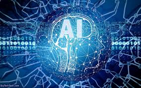

Introduction
Artificial Intelligence (AI) is one of the most advanced and influential technological fields in the modern era. It is used across various industries and applications to enhance efficiency and enable intelligent decision-making. AI relies on advanced technologies such as machine learning, neural networks, and natural language processing, allowing machines to perform tasks that resemble human intelligence.

AI Concepts and Basics
AI is a branch of computer science aimed at developing systems capable of simulating human intelligence and performing tasks that require logical and analytical thinking. This includes machine learning, natural language processing, and computer vision, enabling machines to analyze data and make accurate decisions.

Definition of AI
AI is a branch of computer science focused on developing systems and programs that can simulate human cognitive abilities such as learning, reasoning, decision-making, and interacting with the surrounding environment. AI applications range from smart robots to big data analysis.

History and Development of AI
AI began in the 1950s and has seen significant advancements with the progress of computing technology.

AI Fields
- Machine Learning (ML): Uses algorithms to analyze data, learn from it, and make decisions based on extracted patterns, such as recommendation systems and big data analysis.
- Neural Networks and Deep Learning: Mimics the functioning of the human brain using multiple layers of artificial neural networks, applied in image and speech recognition, and natural language processing.
- Natural Language Processing (NLP): Enables machines to understand and analyze human language, such as translation applications, virtual assistants (like ChatGPT), and sentiment analysis.
- Computer Vision: Allows devices to analyze and understand images and videos, such as facial recognition, medical image analysis, and self-driving cars.
- Expert Systems: Programs that mimic human expertise in specific fields like medical diagnosis, legal consulting, and corporate decision-making.
- Intelligent Robotics: Develops robots capable of interacting with humans and performing complex tasks, such as factory robots, home assistants, and medical robots.

AI Applications and Ethical Considerations
AI is used in healthcare, industry, and security, but it requires ethical considerations.

Importance of AI in Society
AI contributes to increased productivity, innovation, and solutions for complex problems.

Examples of AI Usage
Examples include voice assistants, self-driving cars, and medical diagnostics.

Ethics and Regulations in AI
Standards should be established to ensure transparency and prevent bias in AI applications.

Impact on Employment and Future Work
AI is transforming the job market through automation and the creation of new job opportunities.

Areas of Growth and Development in AI
AI is evolving in areas such as robotics, data analysis, and generative AI.

Conclusion
AI is a technological revolution that contributes to improving quality of life and developing various sectors. However, it requires continuous development and addressing associated challenges to ensure its safe and ethical use.
